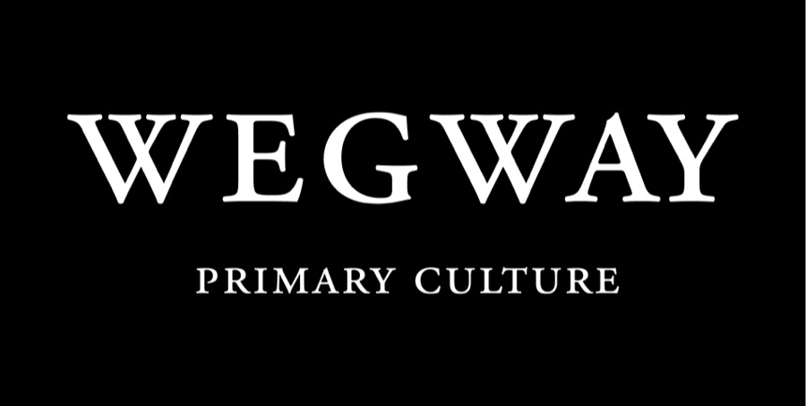
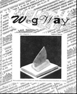
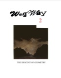
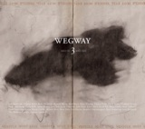
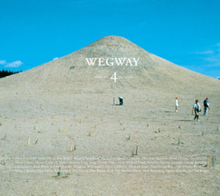
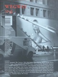
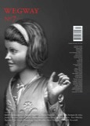
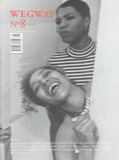
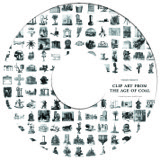

Wegway Primary Culture
Magazine

Wegway was an artists' magazine published twice a year, in the Spring and Fall. Artists and other culture producers often want to publish things that don't fit the formats of most art and literary magazines, and Wegway provided print access for these unique and important projects — with no restrictions on content. It was a venue for artists and culture-producers to say or do whatever they wanted.
Wegway gave artists direct media access: their ideas weren't filtered through the prose of professional critics and interpreters. It wasn't a magazine that reviewed shows — there was no at-the-galleries section. Instead, painters, sculptors, curators, composers, poets, photographers, filmmakers, architects, designers, choreographers, multi-media artists, comic artists, and other primary culture producers presented their own work and expressed their own views.
Wegway went into hibernation in 2007 and stopped accepting new subscriptions and submissions. What follows is an archival record of its eight issues and the Age of Coal clip-art project — not an active storefront.
Issues
9 entries
Wegway 1 Edition of 98, signed and numbered. Cover by Steve Armstrong.
Wegway 2 Edition of 200, signed and numbered. Cover by Steve Armstrong.
Wegway 3 Cover by John Scott.
Wegway 4 Cover by Agnes Denes. Wegway 5
Cover by Doug Fishbone. Comics, essays, and artists' projects from Sherwin Tjia, Robert Lederman, Ron Martin, and more.
Wegway 5
Cover by Doug Fishbone. Comics, essays, and artists' projects from Sherwin Tjia, Robert Lederman, Ron Martin, and more.

Wegway 6 Cover by Matt Siber. Essays, art, interviews, and selections from the 2nd annual juried exhibition.
Wegway 7 Cover by Davida Kidd.
Wegway 8 Cover by Flint Gennari.
Clip Art from the Age of Coal A companion CD of copyright-free etchings and drawings, mostly 1850–1920.Past contributors
Contributors came from all over the world over the magazine's run. They include (in word-string alphabetical order): Aaron Straup Cope, Adrienne Redd, Agnes Denes, Alison Owen, André Questcequecest, Andrew Szatmari, Artists Anonymous, August Highland, Becky Singleton, Ber Lazarus, Bernard Bloom, Beth McCubbin, Betty Kaser, Blair Ewing, Bob Gulley, Brad Brace, Brian Joseph Davis, Brian Kipping, Cartoon Logic, Chris Ballantyne, Chriseddy, Chris MacDonald, Christian McLeod, Christina Reid, Cinqué Hicks, Craig Leonard, Darren Barefoot, Davida Kidd, David Cheung, David Fujino, David Griffin, David Lester, David McClyment, Dixon, Don Bonham, Doug Fishbone, Duane Locke, Ehryn Torrell, Elizabeth Fearon, Elizabeth Mackie, Emily Armstrong, Fang Tong, Flavio Belli, Flint Gennari, Frances Ward, Froilan Vispo, Gabrielle de Montmollin, Gary Michael Dault, Heather Champ, Heather Horton, Hendrik Mallmann, herman de vries, Isabel Martinez, Istvan Kantor, Jamie Osborne, Jaret Vadera, Javier Tellez, Jay Critchley, Jennifer Linton, Jeremi Bialowas, Jess Dobkin, Joan Frick, John K. Grande, John Scott, Joy Garnett, Judith Donoahue, Jukka-Pekka Kervinen, Karen Eliot, Keith O'Donnell, Kenji Siratori, Kim Simonsson, Lanny Quarles, Lindy Roy, Liz-n-Val, Margaux Williamson, Maria Gould, Mark Daniel Cohen, Mark Laliberte, Mark Prier, Matt Harley, Matt Siber, Mauro Ceolin, Melanie Scott, Michael Stipe, Michiko K., Nancy Stevens, Nicole Liao, Oscar Camilo De Las Flores, Paul Grajauskas, Paul Lambert, Peter Lamont, Peter Owen, Peter von Tiesenhausen, Philip Kitt, Randall Packer, Randall Stoltzfus, Raymond St. Arnaud, René Price, Richard Kirkley, Richard Kostelanetz, Rick Taylor, Rick Vincil, Ri Tian, Robert Gill, Robert Lederman, Robin Hesse, Ron Martin, Ross Racine, R. Prost, Ruth Tait, Sarawut Chutiwongpeti, Seak Mac, Sherwin Tjia, Simon Høegsberg, Skip Mendler, Stewart Home, Steve Armstrong, Steve Rockwell, Sue Bracken, Susan Bozic, Susan Gold, Susan Lukachko, Teruhisa Tahara, The Phantom Captain, Tim Sullivan, Todd Macfie, Tommy Campbell, Tony Brooks, Wayne Bertola, and Wm. F. Krendall.